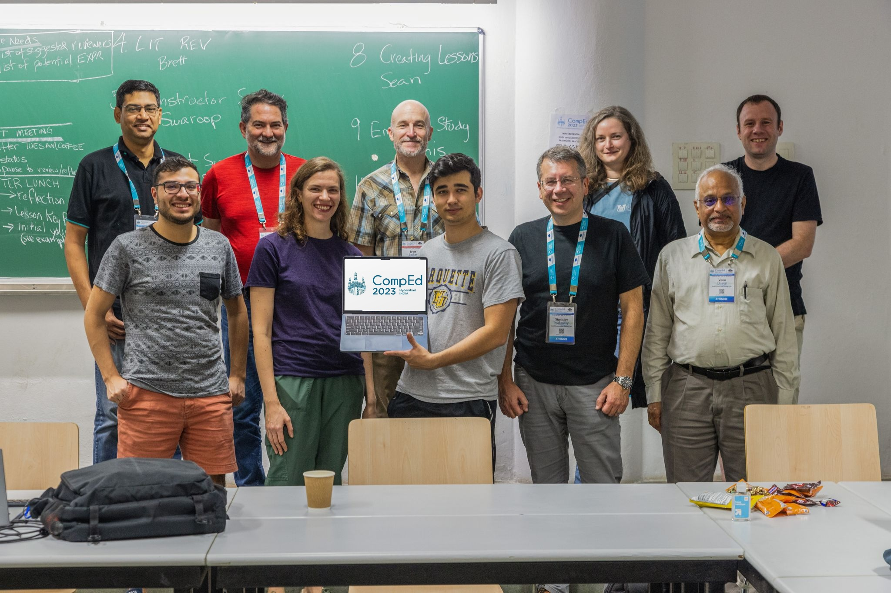

Teaching Programming Error Message Understanding
A Supplementary Page for the CompEd 2023 Working Group on Teaching Students to use Programming Error Messages
Materials
Please use and/or adapt the following lessons in your classroom:
Written lessons and “error hunt” activities
All written lessons and activities are available on Zenodo.
Video lessons
- Video lesson for the C programming language (GCC on the command line)
- Video lesson for the Python programming language (Python 3.12 in VS Code)
- Video lesson for the Java programming language (Java in IntelliJ)
The report
The complete report is available on the ACM Digital Library.
Abstract
About a decade ago there was a sharp increase in the number of research publications focusing on programming error messages. The majority of this work focused on improving or “enhancing” compiler error messages to make them easier for humans, especially novice programmers, to interpret and use more effectively. Little research has been published on explicitly teaching students how to effectively utilize error messages, or leveraging programming error messages as learning opportunities. However, there is no shortage of research showing that error and warning messages present barriers to students learning to program. Additionally, unhelpful and/or unfriendly error messages can cause frustration and negative emotions. We operate on the premise that not utilizing programming error and warning messages effectively, or at all, increases the difficulty of learning to program, and the undesired effects that this is known to have. As compiler messages vary by programming language and/or development environment, both in message and presentation, lessons on interpreting them are not typically included in mainstream educational materials. We believe this gap can be filled and that students can learn to use error messages to their advantage. Further, we believe that teaching students how to read and use error messages can have a significant positive impact on the learning experience for novice programmers. This work presents research on teaching novice programmers how to use programming error messages. Reported here are results from (a) a global survey of computing instructors investigating teaching the use of error / warning messages to novice programmers, (b) a multi-national pilot survey of 345 students about their experience with and attitudes toward error messages, (c) a search for existing online resources created and used by computing faculty, as well as (d) results of an empirical study with 1061 student participants testing an example lesson on using programming language use. The data show our single class-period example lesson makes a difference in student attitude toward programming error messages and their ability to use the messages.
Citation
@inproceedings{Bouvier2024teaching,
author = {Bouvier, Dennis J and Lovellette, Ellie and Santos, Eddie Antonio and Becker, Brett A. and Dasigi, Venu G. and Forden, Jack and Glebova, Olga and Joshi, Swaroop and Kurkovsky, Stan and Russell, Se\'{a}n},
title = {Teaching Programming Error Message Understanding},
year = {2024},
isbn = {9798400702228},
publisher = {Association for Computing Machinery},
address = {New York, NY, USA},
doi = {10.1145/3598579.3689377},
booktitle = {Working Group Reports on 2023 ACM Conference on Global Computing Education},
pages = {1–30},
numpages = {30},
keywords = {computer error messages, computing education, error messages, novice programmers, programming error messages, runtime errors, warning messages},
location = {Hyderabad, India},
series = {CompEd 2023}
}The team
